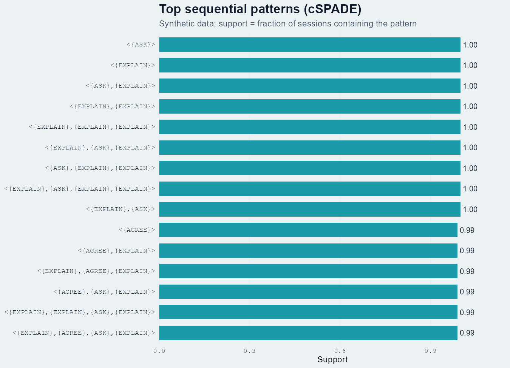

The world of sequence mining — four lenses on the same stream of events.
A friendly map of TNA, Lag Sequential Analysis, Sequential Pattern Mining, and Hidden Markov Models — what each one answers, which R package implements it, and how to read its output. Bundled with a synthetic dialogue dataset and four runnable templates so you can reproduce every figure here in under five minutes.
A friendlier on-ramp to existing tools, not original methodology.
The methods below come from the work of Saqr, López-Pernas, Tikka (TNA), Bakeman, Allison & Liker (LSA), Zaki, Fournier-Viger (SPM), and Helske, Visser (HMM in R). This guide is an opinionated install + usage walkthrough that bundles a synthetic dataset and parameterised templates. For methodological depth, please cite the original sources in Chapter 10.
Four lenses on one synthetic dialogue dataset




Why a family of methods, not just one?
An event log — classroom turns, clinical actions, MOOC clicks, gameplay moves — is a stream of categorical events ordered in time. Researchers want very different things from the same stream:
- "How likely is each next move given the current one?" → TNA
- "Does B follow A more than chance would predict?" → LSA
- "Which long sub-sequences recur across many sessions?" → SPM
- "Are observed moves driven by a few hidden cognitive states?" → HMM
Each method makes different assumptions and produces a different artefact. Treating them as competitors is a category error — they answer different questions. The next chapter maps method to question.
Method × question decision tree
| Your question | Method | R package | Output you'll get |
|---|---|---|---|
| "What's the typical flow between codes?" | TNA | tna | Directed weighted graph with centrality + bootstrap stability |
| "Did groups differ in their flow structure?" | TNA (group) | tna::group_model | Per-group networks + permutation contrast |
| "Does B significantly follow A at lag 1?" | LSA | LagSequential / custom z | z-score matrix per lag |
| "Which 3-step patterns recur in ≥ 30% of sessions?" | SPM | arulesSequences (cSPADE) | Ranked list of frequent ordered patterns |
| "Are there latent states behind the codes?" | HMM | seqHMM / depmixS4 | K hidden states + transition + emission matrices |
| "Do hidden states differ by group / covariates?" | Mixture HMM | seqHMM::build_mhmm | Sub-populations with distinct dynamics |
| "How long does each state typically last?" | Semi-Markov | mhsmm | State + duration distributions |
Confirmatory hypothesis
You wrote a hypothesis like "after teacher feedback, students respond more often than chance." → LSA with the Allison–Liker correction.
Exploratory mapping
You don't know what to expect. You want to see the dialogue's "shape" — which moves dominate, which transitions are typical. → TNA.
Pattern discovery
You suspect specific motifs (ASK→EXPLAIN→EXAMPLE) repeat across many sessions and you want to rank them. → SPM.
A shared dataframe to learn on
Every figure in this guide comes from one synthetic CSV bundled at example_data/fake_dialogue_long.csv. It is not real data — transition matrices were hand-tuned so each method has something interesting to find.
| Column | Type | Carries |
|---|---|---|
| user_id | P001..P100 | Session identifier (50 treatment + 50 control). |
| cond | treatment / control | Group label. |
| turn_idx | int | Monotonic turn index within a session. |
| speaker | A / B | Who spoke this turn. |
| ASK ... ELABORATE | 0 / 1 | One-hot code per turn (5 codes). |
Per-method, this CSV is reshaped exactly once into the structure that method needs:
| Method | Reshape |
|---|---|
| TNA / HMM | Wide matrix: one row per user_id, columns t1..t60, cells are code names. Built via TraMineR::seqdef(). |
| LSA | Single ordered vector per session, then aggregated lag-1 transitions. |
| SPM | Transaction format: sequenceID eventID size item rows, written to a basket file and read by arulesSequences::read_baskets(). |
TNA — Transition Network Analysis
TNA models your stream as a first-order Markov chain (next state depends only on current state) and renders the resulting transition matrix as a directed weighted graph — with centrality, bootstrap edge stability, community detection, and permutation-based group comparison built in.
"I want a network picture of how my codes flow."
Especially good when you want one figure that summarises an entire cohort's typical dynamics, or when you want to compare the structure of two cohorts.
Minimal code
library(tna); library(TraMineR) seq_obj <- seqdef(wide_matrix, alphabet = CODES) m <- build_model(seq_obj) # fit first-order TNA plot(m) # transition graph centralities(m) # in/out degree, betweenness, closeness, ... boot <- bootstrap(m) # edge stability gm <- group_model(seq_obj, group = cond) # per-group permutation_test(gm) # test group difference

TNA's default model is first-order Markov. Long-range dependencies and durations are invisible. If your data has clear "phases" (e.g. exploration → exploitation), consider FTNA, clustered TNA, or HMM instead.
LSA — Lag Sequential Analysis
LSA is the classic confirmatory test: given antecedent A, is consequent B significantly more likely at lag k than chance? It produces a z-score per (A, B, lag) cell. Popularised by Bakeman & Gottman; Allison & Liker (1982) corrected the variance for the dependence between row and column counts.
"I have a specific hypothesis about which transitions matter."
And you want a defensible significance test rather than just a pretty graph.
Minimal code (no external package)
# Build lag-1 transition counts for (s in sessions) { for (i in 1:(length(s) - 1)) trans[s[i], s[i+1]] <- trans[s[i], s[i+1]] + 1 } # Allison-Liker z N <- sum(trans); rsum <- rowSums(trans); csum <- colSums(trans) pA <- rsum / N; pB <- csum / N expected <- outer(rsum, pB) var_AL <- outer(rsum, pB * (1 - pB)) * outer(1 - pA, rep(1, length(pB))) z <- (trans - expected) / sqrt(var_AL)
Raw z-scores are inflated when codes can repeat. Always use the Allison–Liker correction (or its equivalent) for sampling dependence; otherwise spurious "significance" is routine.
SPM — Sequential Pattern Mining
SPM looks for variable-length sub-sequences that occur in at least minSupport fraction of your sessions — without imposing any Markov assumption. The cSPADE algorithm (Zaki 2001) implemented in arulesSequences is the standard R route; SPMF (Java) and PrefixSpan (Python) cover the rest.
"I want frequent ordered motifs across many sessions."
Especially useful when motifs span more than two events — LSA only looks at lags one at a time, SPM finds sub-sequences of arbitrary length.
Minimal code
library(arulesSequences) # Build a "basket" file: sequenceID eventID size item trans <- read_baskets("baskets.txt", info = c("sequenceID","eventID","SIZE"), sep = " ") patterns <- cspade(trans, parameter = list(support = 0.3, maxsize = 1, maxlen = 4)) df <- as(patterns, "data.frame") df[order(-df$support), ] # top patterns
minSupport is a tuning knife. Too low → combinatorial explosion (millions of patterns, mostly noise). Too high → only trivial patterns survive. Always pair with closed/maximal pattern filtering.
HMM — Hidden Markov Models
HMM lets the state be latent. Observed codes are noisy emissions from a smaller set of unobserved cognitive/behavioural states. The model learns (1) emission probabilities P(code | state), (2) transition probabilities P(statet+1 | statet), and (3) the most-likely state sequence per observation (Viterbi).
"My codes are measurements of a deeper construct, not the construct itself."
e.g. you suspect "exploring", "consolidating", and "stuck" states drive the visible moves but you can't observe them directly.
Minimal code
library(seqHMM); library(TraMineR) seq_obj <- seqdef(wide_matrix, alphabet = CODES) hmm0 <- build_hmm(observations = seq_obj, n_states = 3) fit <- fit_model(hmm0, control_em = list(restart = list(times = 5))) fit$model$transition_probs # K x K state-transition matrix fit$model$emission_probs # K x V code-emission matrix plot(fit$model) # observed + hidden state plot
Choosing K (number of hidden states) is hard and consequential. EM is local-optimum prone — run many random initialisations and compare BIC / AIC / cross-validated log-likelihood. Picking K by eyeballing is the #1 reproducibility failure in applied HMM papers.
Side-by-side: same data, four lenses
To make the family relationship vivid: all four figures above were fit on exactly the same 4,136-turn synthetic CSV. They each tell a different story.
| Method | Headline number | What it answers |
|---|---|---|
| TNA | P(EXPLAIN | ASK) = 0.53 | "Most likely follow-up to ASK is EXPLAIN." |
| LSA | z(ASK→EXPLAIN) = +20.6 | "That follow-up is far more frequent than chance." |
| SPM | support(ASK,EXPLAIN,EXAMPLE) ≈ 0.95 | "This three-step motif appears in nearly every session." |
| HMM (K=3) | logLik = −6271.79 | "Three hidden states explain the sequence well; transition matrix recovered." |
When to chain them
- TNA → HMM: Use TNA to confirm the data has structure; use HMM to ask whether that structure is driven by latent states.
- SPM → LSA: Use SPM exploratorily to surface frequent motifs; use LSA to test whether the surfaced motifs are statistically meaningful.
- LSA → TNA: Use LSA to identify which transitions are above chance; visualise only those edges in TNA for a cleaner figure.
- HMM → TNA: Run TNA on the inferred hidden-state sequence to get a transition graph in latent space.
Troubleshooting matrix
| Symptom | Likely cause | Fix |
|---|---|---|
TNA: could not find function "build_tna" | Old API name | Use build_model() (tna 1.2.x). |
| seqdef: "found missing values ('NA')" | Sessions of unequal length | That's fine — seqdef codes voids; the message is informational. |
| LSA: NaN cells in z matrix | Row or column count is 0 | Drop never-occurring codes or replace NaN with 0 after computing z. |
| cSPADE: 0 patterns returned | support too high | Lower parameter = list(support = ...) until you get patterns. |
| cSPADE: millions of patterns | support too low / no maxlen | Add maxlen, maxsize constraints; consider closed patterns. |
| HMM: degenerate states (all P≈0) | EM stuck in local optimum | Pass control_em = list(restart = list(times = N)) with N ≥ 5. |
| HMM: K too high → overfit | BIC keeps rising with K | Use cross-validated log-likelihood; pick K where CV peaks, not BIC. |
| All methods: very few sessions per group | n < 30 per group | Bootstrap heavily; report uncertainty; prefer descriptive over inferential framing. |
None of these methods are causal. A heavy ASK→EXPLAIN edge tells you about the structure of the dialogue, not about what would happen if you intervened. Causal claims need a causal design.
References — cite the originals
TNA
- Tikka, S., López-Pernas, S., & Saqr, M. (2025). tna: An R Package for Transition Network Analysis. Applied Psychological Measurement. doi:10.1177/01466216251348840
- Saqr, M., López-Pernas, S., Törmänen, T., Kaliisa, R., Misiejuk, K., & Tikka, S. (2025). Transition Network Analysis: A Novel Framework. LAK '25 Proceedings. doi:10.1145/3706468.3706513
- Package site: sonsoles.me/tna/ · tutorials at lamethods.org/book2/ (chapters 15–17 cover TNA / FTNA / TNA-clusters).
Lag Sequential Analysis
- Bakeman, R., & Gottman, J. M. (1997). Observing interaction: An introduction to sequential analysis (2nd ed.). Cambridge University Press.
- Allison, P. D., & Liker, J. K. (1982). Analyzing sequential categorical data on dyadic interaction. Psychological Bulletin, 91(2), 393–403. (The variance correction we use.)
- O'Connor, B. P. (2019). LagSequential [R package]. CRAN.
Sequential Pattern Mining
- Zaki, M. J. (2001). SPADE: An efficient algorithm for mining frequent sequences. Machine Learning, 42, 31–60. (cSPADE adds constraints.)
- Buchta, C., & Hahsler, M. arulesSequences [R package]. CRAN.
- Fournier-Viger, P. et al. SPMF — Java reference library with 55+ algorithms. philippe-fournier-viger.com/spmf/
- Python: PrefixSpan-py.
HMM
- Helske, S., & Helske, J. (2019). Mixture Hidden Markov Models for Sequence Data: The seqHMM Package in R. Journal of Statistical Software, 88(3). doi:10.18637/jss.v088.i03
- Visser, I., & Speekenbrink, M. (2010). depmixS4: An R Package for Hidden Markov Models. Journal of Statistical Software, 36(7).
- Aarts, E. et al. (2023). Bayesian multilevel HMM with categorical data. Multivariate Behavioral Research.
- Python: hmmlearn.
This is a community on-ramp, not the canonical source.
Numbers in this guide come from a synthetic dataset bundled here for demonstration. Wording is summarised in our own words to be beginner-accessible. For methodological depth, defer to the publications above.